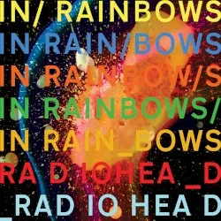

Nombre Cambiado
@pruebatestingPerfil privadoDesde agosto de 2026
2seguidores3siguiendo
Al seguir se abreSolicitud enviada
Cuando acepte, la funda se abre aquí mismo. Te avisaremos.
- Diario
- Favoritos
- Listas
- Colección física
Seguidores en común: 1
@pruebatestingPerfil privadoDesde agosto de 2026
2seguidores3siguiendo
Cuando acepte, la funda se abre aquí mismo. Te avisaremos.
Seguidores en común: 1
@besantanag95000 · Desde noviembre de 2026 · 0 seguidores · 0 siguiendo

In Rainbows
RadioheadSi sigues a @besantanag95000, verás también lo que comparte solo con sus seguidores.
@bsantanaDesde octubre de 2026
0seguidores0siguiendo
Si sigues a @bsantana, verás lo que comparte solo con sus seguidores.